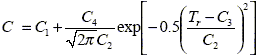

A song was playing and had the sound of a hammer hitting spikes on railroad tracks,
Billy asked who is outside the poker tent doing that?
Devo presenting the pregnancy test to B.A.
Fitz going on an intense fervent rant about not getting any gravy Saturday morning.
The tale of Billy seen operating a pink Barbie saw.
It is RIGGED!
"I" spelled E Y E (while pointing at the eyeball)
Vaughn, crazy bastard.
To Cromer and Taylor and Jon!!!
One-eyed Billy Jack.
How'd ya boots get wet?....WATER!
Pack your sh!t and get your ass down the mountain.
Last cigarette. Gotta go down the mountain.
Fire Hot! River Cold! Beer Good!
Little JJ and the 'S' word.
Lusk's youngest comes home from school and states the little girl on the bus
said the 'S' word to him. Barry asks him what was the word she used, and he says "F*** You".
"After a storm, sunshine shall follow the next day" ...Brent Smith
Not a single new word this year. Pitiful.
Furman has expressed a desire to become a member of this annual Camping Trip. He is currently in
the evaluation period and already showing dedication and commitment. The Elders will decide on
Furman's prospect duration and eventually have the final vote on promoting him from Prospect to
Camping Member in the future.
The Camping Elders have unanimously decided to place Vinson on Double Secret Probation (LEVEL 2).
This is a rare occurrence for a camper to receive a LEVEL 2 Probation. LEVEL 2 punishment includes:
| • Removal from the official cell phone texting thread |
| • Revocation of the honorary whistle |
| • Removal from the most honored list displaying those names of "The Few And The Dedicated" |
Coleman had submitted the proper paperwork (Form SI-20/6925FL) for his absence in 2025 and HR approved without question.
No promotions this year.
Three Work Orders were submitted for fire pit digging, poker tent(Airbnb) assembly, and kitchen canopy assembly. All WOs were
successfully approved and implemented to completion. We are reporting OSHA regulations were adhered to by all personnel.
Total of 4 throughout the weekend.
Vaughn was moving amongst us in stealth mode. He was never actually seen,
but if you do see him it will be the last image your eyes experience.
Lusk easily took the Rip Van Winkle trophy each night.
Billy departed on Saturday, but notified leadership one week in advance.
Most fees have been paid in full as of 2025 to the Race Winner. Two fees remain outstanding
however there is an agreement for payment on or before Feb 6, 2026.
Billy experienced a minor fall but no report was submitted. We are maintaining zero reported incidents for 2025.
No tubacopper or alien sightings, but a pack of coyotes surrounded camp each morning before sunrise and sang to us.
64 Pallets
Congratulations to the team!!! We have finally reached our goal of aligning with the Green Initiative. There
was a massive decrease in pallet count this year, and carbon gas emissions were down by 51.034 percent. Bonuses will
be paid out by November in the form of Corporate Stock (Preferred).
Very pleasant temperatures for entire weekend. Minimal rain showers moved in on Friday night.
No LEOs in camp, but make no mistake, they are out there watching.... waiting.
10 degrees hotter than Hell!
An abundance of bad lower backs and sore knees that have attacked us with age.
A vast quantity using the following equations:

To all those who
| • prepared the campsite (wood delivery, pit digging, Airbnb erecting, etc.) |
| • prepared some meal and assisted or provided food. Excellent cooking by Furman! |
| • provided pallets. |
A toast to the USA, DixieLand, the Great American Fighting Soldier, good friends and to those we have lost along the way.
A crap load of toasts were offered up to Taylor and Cromer and Jon this year.
To those that have departed...."Here's to all the nights we can't remember with a friend we'll never forget." – Anonymous
The OFFICIAL Camping Trip start time is Friday at noon.
The Friday 12 noon opening song: "The Boys Are Back in Town" by Thin Lizzy.
Drawing for race pool is now Saturday after the noon meeting.
Chair sacrifice is now at 10:00 pm on Saturday night.
Any of the seven days prior to the official start of the Camping Trip is now designated as wood/pallet pickup
and delivery days. This is the most important preparation of the trip. Attendance is mandatory and absence
requires a written doctor's statement or proof of out-of-town travel signed by a CEO.
Boys Are Back In Town was performed by Thin Lizzy to officially kick off the Camping Trip.
We wish to thank the band for taking the time to perform on Friday.
A quorum was present for the annual meeting.
A toast offered to Taylor and Cromer and the good times we experienced with them both.
A toast to Jon was offered. (*We missed you this year. Expect to see you in 2026)
Possible spring camping at Cassidy Bridge campsite just for fun.
Unanimously approved was suggestion by Fitz to have at 4:20 a shot, a spark, and a salute.
Plan for a replacement or repair of Robert's audio speaker. AND have a backup speaker
Email address to send any photos for posting is : joyvon [at] charter.net
Fire was stoked, cards were played, hops was consumed, good food was prepared.
Many Socials were offered up and accepted.
Brent Evans was awarded the chair for the yearly sacrifice.
A good time was had by all.
Until next year.